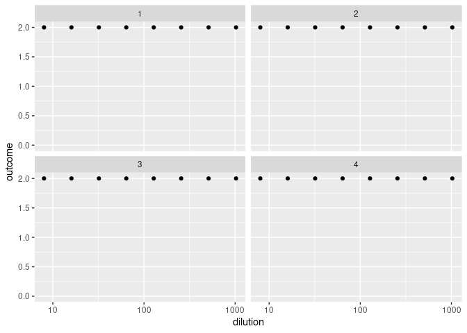
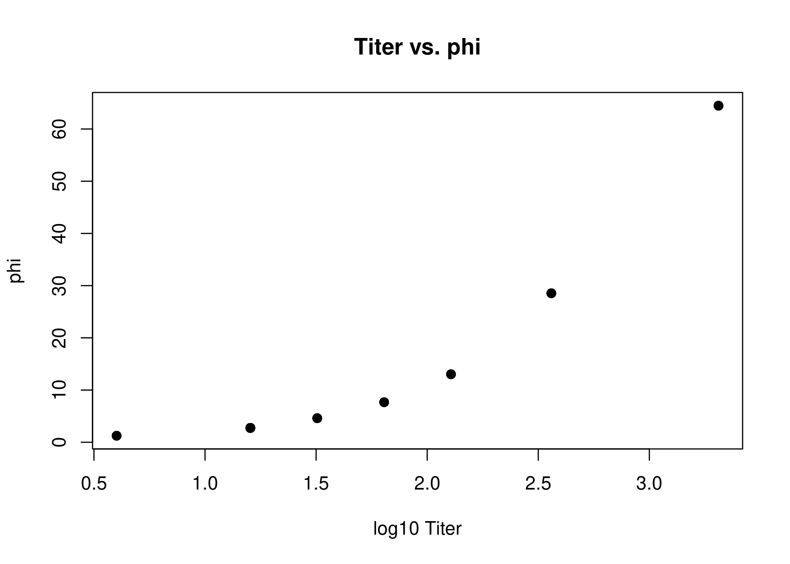
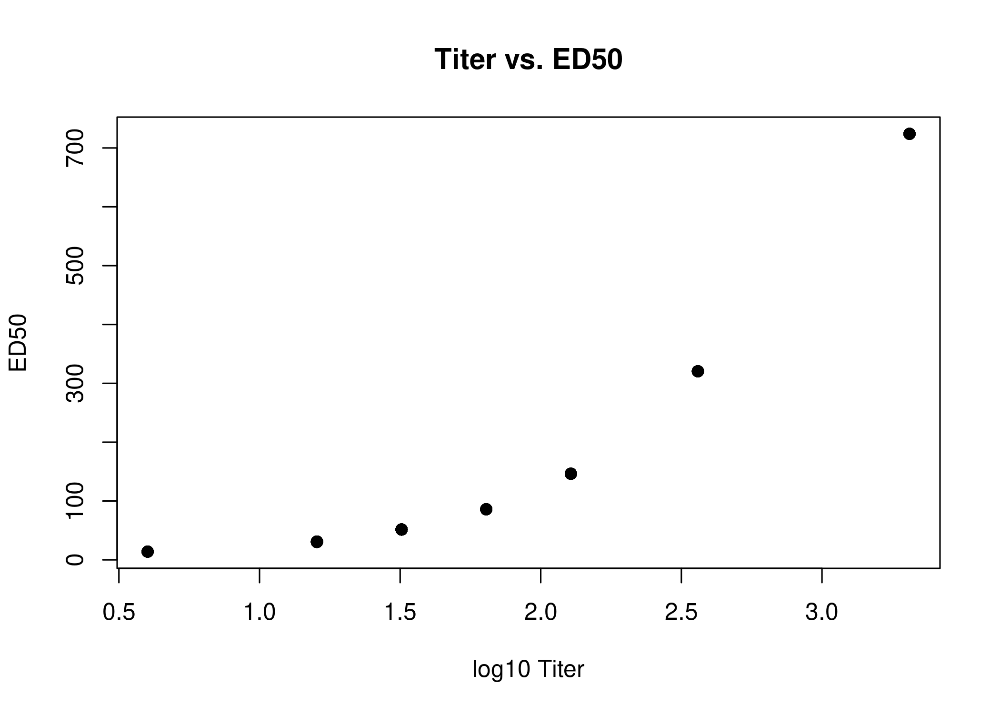
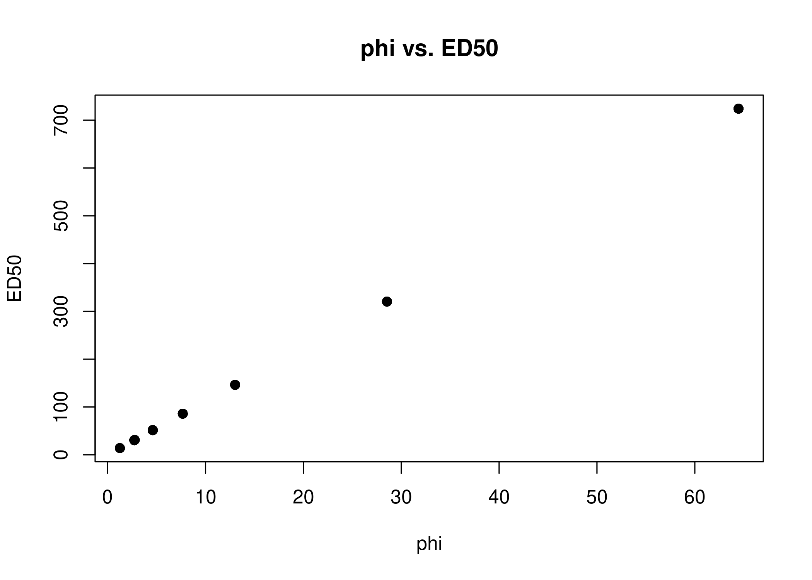
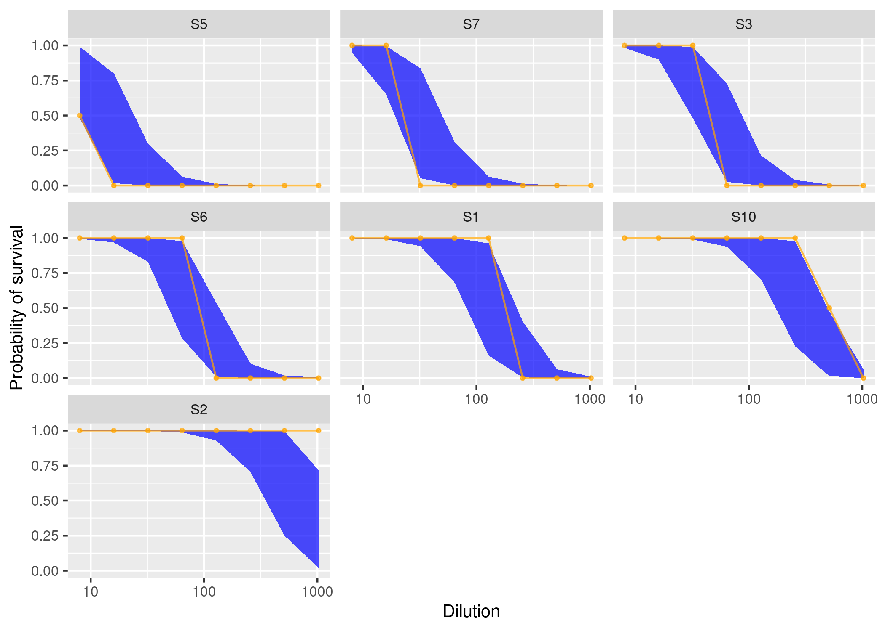

bayesianTiterCalc is a Bayesian inference method that calculates a serum sample’s antibody concentration, ϕ, and titer based on data obtained from a standard neutralization assay. The method uses a logistic function as a function of ϕ to model the dose-response relationship in a mechanistic model. Given the limited information per sample that’s inherent in the experimental design of neutralization assays (number of replicates per dilution and number of dilutions), the advantage of Bayesian inference as used here is the use of probability distributions to incorporate uncertainty in the outcome.
Installation
You can install the development version of bayesianTiterCalc from GitHub with:
# install.packages("devtools")
devtools::install_github("ekamau/bayesianTiterCalc")Usage
The following example demonstrates the use of the package with serum neutralization data provided in the package. The data was obtained from 2-fold serum dilutions from 1:8 to 1:1024, where each dilution was tested in duplicate.
library(dplyr)
delayedAssign('df', evTitrations)
df <- df %>% mutate(sample=as.numeric(as.factor(sampleID)))
table(df$outcome)
non_monotone <- df %>%
group_by(sample) %>%
summarise(is_non_monotone=non_monotonic(outcome))
table(non_monotone$is_non_monotone)Visualize the data to show the number or proportion of replicates that have surviving cells (Y axis) per dilution:
library(ggplot2)
options(dplyr.summarise.inform = FALSE)
df %>%
filter(sample %in% 1:4) %>%
group_by(sample, dilutions) %>%
summarise(outcome=mean(outcome)) %>%
ggplot(aes(x=dilutions, y=outcome)) +
geom_point() +
scale_x_log10() +
ylim(0, 2) +
labs(x = 'Dilution', y = 'Outcome') +
theme(axis.title = element_text(size=12),
axis.text = element_text(size=10),
strip.text = element_text(size=10)) +
facet_wrap(~sample)
Fit a statistical model (modified logistic function) written in the Stan programming language to the data to estimate ϕ and the endpoint serum dilution at 50% cell culture mortality (ED50).
In this example we use the Stan’s sampling algorithm, but the optimization algorithm is also available through the ‘optimizing_stan’ function in this package.
stan_data <- list(
N = nrow(df),
nreplicates=rep(2, nrow(df)),
survival=df$outcome,
dilution=df$dilutions,
nsample=max(df$sample),
sample=df$sample,
is_log=1
)
fit <- sampling_stan(standata = stan_data, chains=4, iter = 1000, init = 'random')Examine the model estimates - ϕ and ED50 - and compare with antibody titer calculated with the Reed and Muench method.
phiEstimated <- apply(rstan::extract(fit, "phi")[[1]], 2, mean)
ed50Estimated <- apply(rstan::extract(fit, "ed50")[[1]], 2, mean)
phis_ed50_titers <- df
for(i in 1:nrow(phis_ed50_titers)){
phis_ed50_titers[i, 'phi'] <- phiEstimated[phis_ed50_titers$sample[i]];
phis_ed50_titers[i, 'ed50'] <- ed50Estimated[phis_ed50_titers$sample[i]]
}
plot(log10(phis_ed50_titers$titer), phis_ed50_titers$phi,
main="Titer vs. phi", ylab="phi", xlab="log10 Titer", pch=19)
plot(log10(phis_ed50_titers$titer), phis_ed50_titers$ed50,
main="Titer vs. ED50", ylab="ED50", xlab="log10 Titer", pch=19)
plot(phis_ed50_titers$phi, phis_ed50_titers$ed50,
main="phi vs. ED50", ylab="ED50", xlab="phi", pch=19)
Extract posterior predictive simulations:
survival_sim <- rstan::extract(fit, "survival_sim")[[1]]
outcome_sim <- apply(survival_sim, 2, function(x) quantile(x, 0.5))
prob <- apply(rstan::extract(fit, "prob")[[1]], 2, median)
prob_low <- apply(rstan::extract(fit, "prob")[[1]], 2, function(x) quantile(x, 0.025))
prob_high <- apply(rstan::extract(fit, "prob")[[1]], 2, function(x) quantile(x, 0.975))
df <- df %>%
mutate(outcome_sim = outcome_sim, prob = prob, prob_low = prob_low, prob_high = prob_high)
df_long <- df %>%
select(sampleID, dilutions, outcome, outcome_sim, prob, prob_low, prob_high) %>%
rename(actual = outcome, simulated = outcome_sim) %>%
mutate(fraction = actual / 2)
bars <- df_long %>%
group_by(sampleID) %>%
summarise(barcode = paste0(actual, collapse = "")) %>%
ungroup() %>%
pull(barcode) %>%
unique()
bars_lookup <- df_long %>%
group_by(sampleID) %>%
summarise(barcode = paste0(actual, collapse = ""))
df_long <- df_long %>% left_join(bars_lookup)
df_each_code <- df_long %>%
group_by(barcode) %>%
summarise(sampleID = first(sampleID)) %>%
mutate(keep = TRUE)
df_short <- df_long %>%
left_join(df_each_code) %>%
filter(keep == TRUE)
Plot the probability of cells surviving per serum dilution point:
library(tidyverse)
tmp <- df_short %>%
group_by(sampleID) %>%
summarise(first_non_total = which(actual < 2)[1]) %>%
mutate(first_non_total = ifelse(is.na(first_non_total),
max(first_non_total, na.rm = T) + 1,
first_non_total))
df_short %>%
left_join(tmp) %>%
mutate(sampleID = as.factor(sampleID)) %>%
mutate(sampleID = fct_reorder(sampleID, first_non_total)) %>%
ggplot(aes(x = dilutions, y = prob)) +
geom_ribbon(aes(ymin = prob_low, ymax = prob_high), alpha = 0.7, fill = "blue") +
geom_point(aes(y = fraction), size = 0.8, alpha = 0.7, colour = "orange") +
geom_line(aes(y = fraction), alpha = 0.7, colour = "orange") +
scale_color_brewer("Type", palette = "Dark2") +
scale_x_log10() +
labs(y = "Probability of survival", x = "Dilution") +
theme(axis.title = element_text(size=10),
axis.text = element_text(size=8),
strip.text = element_text(size=8)) +
facet_wrap(~sampleID)